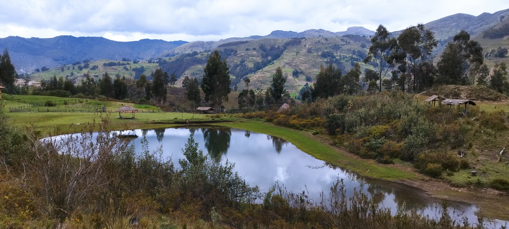

Inicio
Conocimiento previo
LA LAGUNA TURISTICA DE JACABAMBA DEL CENTRO POBLADO DE SHIULLA
Jacabamba está ubicado en el centro poblado de Shiullá, a 30 minutos en trocha carrozable desde la cuidad de Pomabamba, es un cuerpo de agua aproximadamente 900 metros cuadrados, en 2 hectáreas de área, cuyas aguas son de color verduzco y una profundidad de aproximadamente 3 metros, sus aguas son de afloración subterránea. En los últimos años dicho paraje se ha convertido en una zona de atracción turística, donde los visitantes pasan momentos de esparcimiento con sus familiares y amigos, del mismo modo la Municipalidad provincial ha considerado como un lugar preferente en la celebración de la semana turística que se realiza en el mes junio del año 2023, como preámbulo de la festividad religiosa de San Juan Bautista. En vista de que el indicado lugar debe ser acondicionado para brindar un servicio turístico adecuado y acogiendo la solicitud de los pobladores de Shiullá. De este modo se concluyo con el mantenimiento y la rehabilitación de la laguna turística de Jacabamba siendo pues El Area de la Gerencia de Desarrollo Económico de la Municipalidad Provincial de Pomabamba quien llevo a cabo esta responsabilidad de realizar este proyecto.

Objetivos
El objetivo de la Laguna turística es promover el turismo y brindar a los visitantes una experiencia agradable y enriquecedora, donde puedan disfrutar de la belleza natural del entorno, participar en actividades recreativas y culturales, contribuir al desarrollo económico de la región.

LA LAGUNA DE DIVERSION Y RELAJACION
La laguna de Jacabamba es una laguna azul, una joya creada por la mano del hombre, te espera para sumergirte en un mundo de diversión y relajación. Con sus aguas turquesas y suave arena blanca de Shiulla, esta laguna artificial ofrece un escape perfecto para disfrutar en familia o con amigos. puedes nadar en sus refrescantes, la laguna cuenta con áreas de picnic. ¡Ven y sumérgete en esta maravilla acuática!